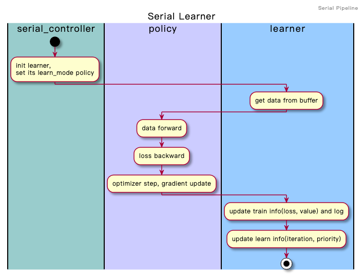
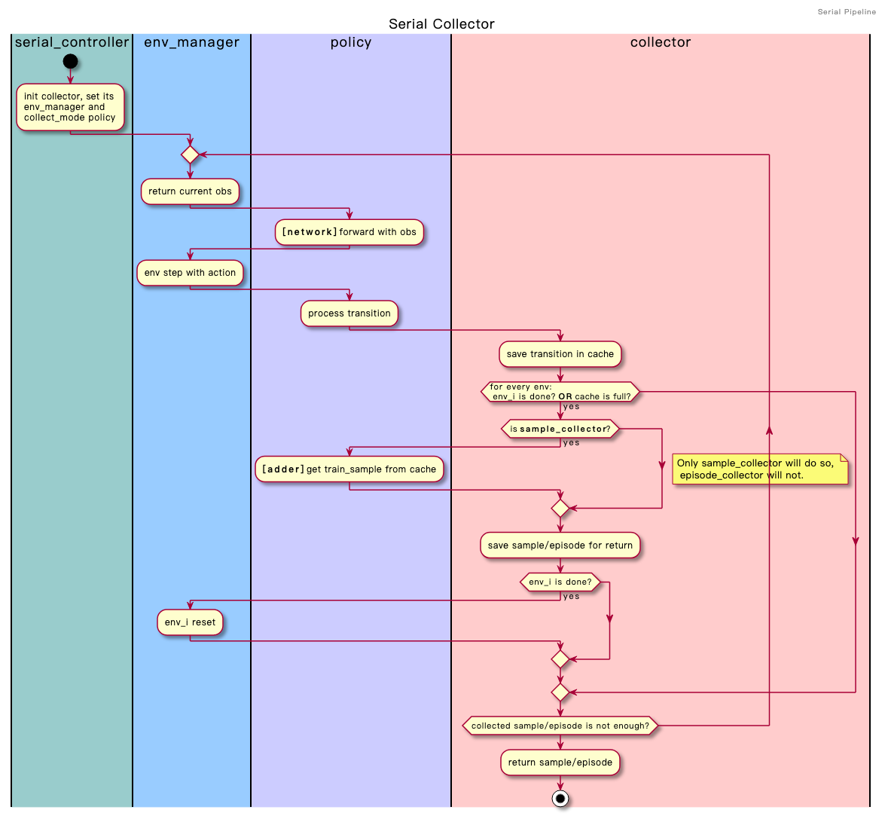

Policy Overview¶
Policy Modes¶
3 Common Modes
learn_mode: a collection of functions/methods which are designed to update and optimize policy.Here is a demo about how to apply policy
learn_modein serial pipeline:collect_mode: a collection of functions/methods which aims to collect training data with the balance of exploration and exploitation.Here is a demo about how to apply policy
collect_modein serial pipeline:eval_mode: a collection of functions/methods which are responsible for fair policy evaluation.Here is a demo about how to apply policy
eval_modein serial pipeline:
Some Customrized Mode(User defined)
command_mode: a collection of functions/methods for information control among different modes.league_mode: a collection of functions/methods related to self-play league training.trick_mode: a collection of functions/methods for adaptive hyper-parameter tuning.
{kind=link}
{kind=link}
Policy Interfaces¶
Common Interfaces:
default_config: Default config of this policy__init__: Basic and common initialization, e.g. model, on_policy, device; Also init learn, collect or eval modes, according to parameterenable_field._create_model: Create a model according todefault_modelmothod, if no model is passed in._set_attribute: Set an attribute for the policy._get_attribute: Get an attribute of the policy.sync_gradients: Sync gradients of multiple GPUs.default_model: If no model is passed in,_create_modelwould call this method to create a model by default.
Learn Mode Interfaces:
_forward_learn: Forward method for learn mode._reset_learn: Reset learn mode related variables if there are any. Do not need to implement this by force._monitor_vars_learn: Variables that are monitored in learner training process. Those variables will be printed to text and tensorboard logger._state_dict_learn: Return model’s current state dict._load_state_dict_learn: Load a state dict to model.
Collect Mode Interfaces:
_forward_collect: Forward method for collect mode._reset_collect: Reset collect mode related variables if there are any. Do not need to implement this by force._process_transition: Process env timestep and policy output into a transition._get_train_sample: Get samples that could be used for training from a sequence of transitions._state_dict_collect: Return model’s current state dict._load_state_dict_collect: Load a state dict to model.
Eval Mode Interfaces:
_forward_eval: Forward method for eval mode._reset_eval: Reset eval mode related variables if there are any. Do not need to implement this by force._state_dict_eval: Return model’s current state dict._load_state_dict_eval: Load a state dict to model.
All the mentioned above are some basic definitions and instructions, users can learn from the examples.( ding/policy/ )
Note
How to define own get_train_sample case?
Note
How to define policy config?
You can refer to this for an overview. Here we take the default_config of DQNPolicy as an example.
config = dict(
# RL policy register name, refer to registry `POLICY_REGISTRY`.
type='dqn',
# Whether to use cuda for network
cuda=False,
# Whether the RL algorithm is on-policy or off-policy
on_policy=False,
# Whether use priority(Priority Experience Replay)
priority=False,
# (bool) Whether use Importance Sampling Weight to correct biased update. If True, priority must be True.
priority_IS_weight=False,
# Reward’s future discount factor, aka. gamma
discount_factor=0.97,
# N-step reward discount sum for target q_value estimation
nstep=1,
# learn_mode policy config
learn=dict(
# (bool) Whether to use multi gpu
multi_gpu=False,
# How many updates(iterations) to train after collector's one collection.
# Bigger "update_per_collect" means bigger off-policy.
# collect data -> update policy-> collect data -> ...
update_per_collect=3,
# The number of samples of an iteration
batch_size=64,
# Gradient step length of an iteration.
learning_rate=0.001,
# ==============================================================
# The following configs are algorithm-specific
# ==============================================================
# Frequence of target network update.
target_update_freq=100,
# Whether ignore done(usually for max step termination env)
ignore_done=False,
# Specific config for learner.
learner=dict(),
),
# collect_mode policy config
collect=dict(
# Only one of [n_sample, n_episode] shoule be set
# n_sample=8,
# Cut trajectories into pieces with length "unroll_len".
unroll_len=1,
# Specific config for collector.
collector=dict(),
),
# eval_mode policy config
eval=dict(
# Specific config for evaluator.
evaluator=dict(),
),
# other config
other=dict(
# Epsilon greedy with decay.
eps=dict(
type='exp',
start=0.95,
end=0.1,
decay=10000,
),
# Config for replay buffer.s
replay_buffer=dict(
replay_buffer_size=10000,
),
),
)
Note
How to customize models in different modes?
In most cases, learn, collect and eval modes use one same model. However, they might wrap the shared model with different wrappers to fulfill their own demands. For example: Model does not need to update in collect and eval mode, while needs to update in learn mode; Collect mode model might need to use exploration, while eval mode model does not need it.
However, in some policies, different modes’ models are different. For example, InverseRL needs an expert model to collect expert data, then uses expert data to train a new model. In such cases, users need to customize models in different modes.
In normal policies, model init in _init_collect mothod might be like this:
# `self.model` is initialized in policy base class's `__init__` mothod.
self._collect_model = model_wrap(self.model, wrapper_name='base')
And in policy ILPolicy, _init_collect mothod is like this:
# FootballKaggle5thPlaceModel is an expert model.s
self._collect_model = model_wrap(FootballKaggle5thPlaceModel(), wrapper_name='base')
Tip
Many algorithms use target model to solve over-estimation problem. In policy, it is often implemented in this way:
from ding.model import model_wrap
self._target_model = copy.deepcopy(self._model)
self._target_model = model_wrap(
self._target_model,
wrapper_name='target',
update_type='assign',
# `policy.learn.target_update_freq`: Frequence of target network update. Int type.
update_kwargs={'freq': self._cfg.learn.target_update_freq}
)